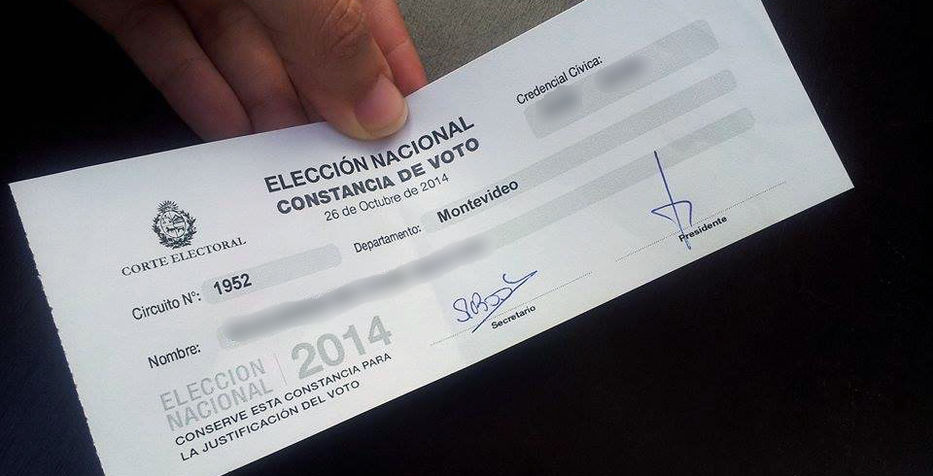

¿Dónde sufragar?
Para saber en qué circuito le corresponde sufragar a cada ciudadano, se puede consultar el plan circuital para las elecciones de la fecha correspondiente, en la página de la Corte Electoral o en cualquier otra página que ofrezca el servicio de manera confiable. Se deberá ingresar los datos de la credencial cívica o la cédula y se le brindará la información acerca del lugar en el que le corresponde votar.
¿Qué documentos presentar y dónde?
Luego de haber obtenido la información sobre el circuito en el que le corresponde votar, deberá dirigirse al mismo portando la credencia cívica para realizar la votación. En caso de no presentar el documento solicitado, puede sufragar de igual manera mencionando su número y serie a los integrantes de la mesa receptora de votos.
¿Qué se hace en la sala de votaciones y cómo se colocan las listas?
Un integrante de la mesa receptora de votos le otorgará un sobre de votación para que coloque dentro de él, en la sala de votación, la lista del candidato que desee votar, ya sea que la haya elegido de ahí adentro o que la haya llevado consigo.
En cada sobre de votación deberá colocarse la lista del candidato a Intendente que elija. En caso de que el ciudadano se encuentre dentro de los límites de un Municipio, deberá agregar también una lista para elegir a los integrantes de los municipios. Si una persona que es parte de un municipio vota solamente al candidato a Intendente, su voto será igualmente válido.
¿Qué hacer al finalizar la votación?
Al salir del cuarto de votación, se le debe entregar a los integrantes de la mesa receptora de votos el talón del sobre y colocar el sobre cerrado en la urna de votación. El presidente de la mesa le entregará al votante un comprobante y su correspondiente credencial cívica, quedando así finalizado el sufragio.